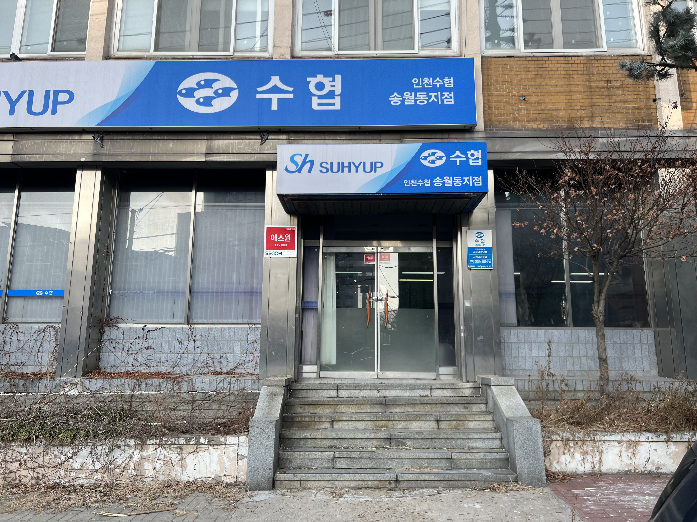
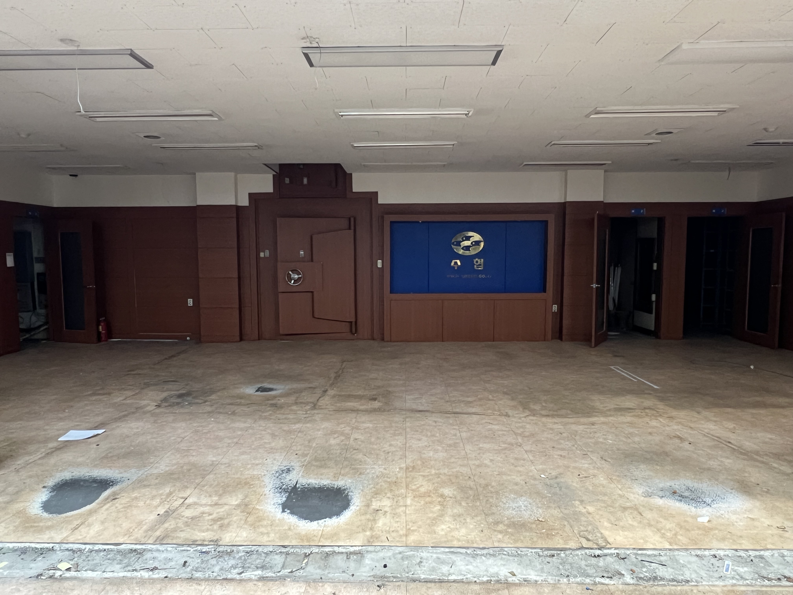
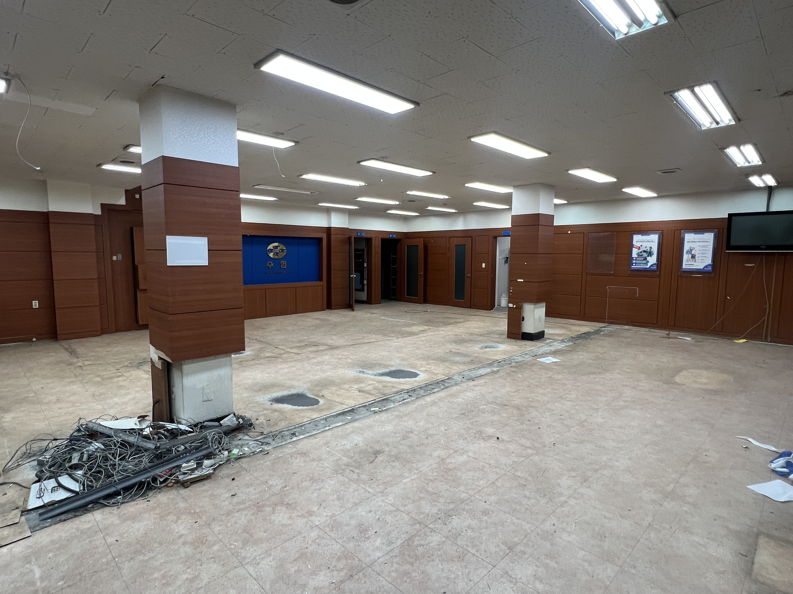
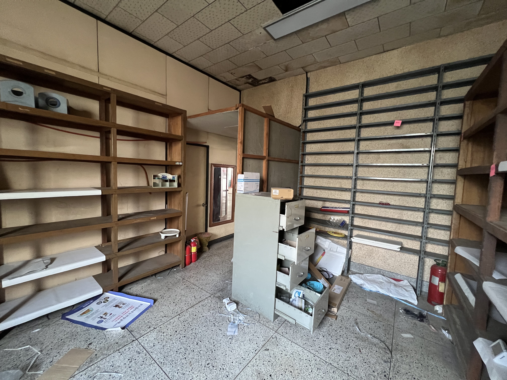
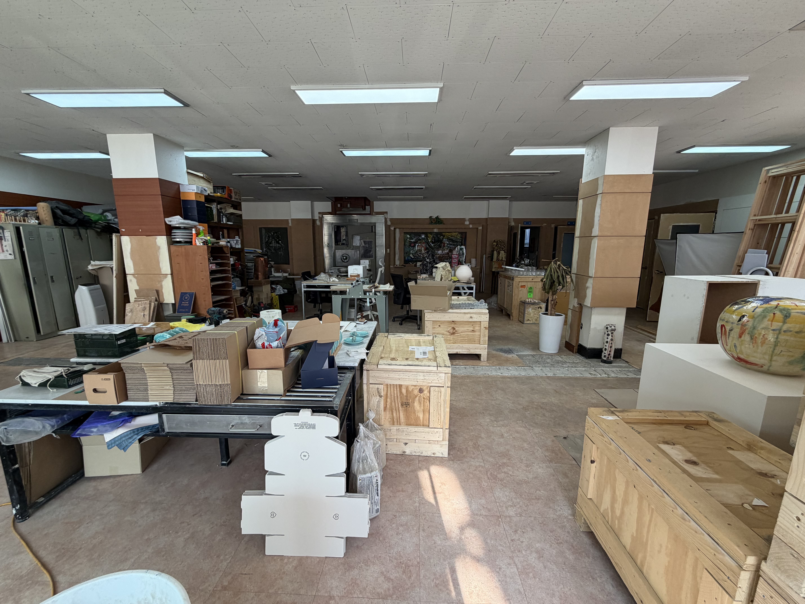
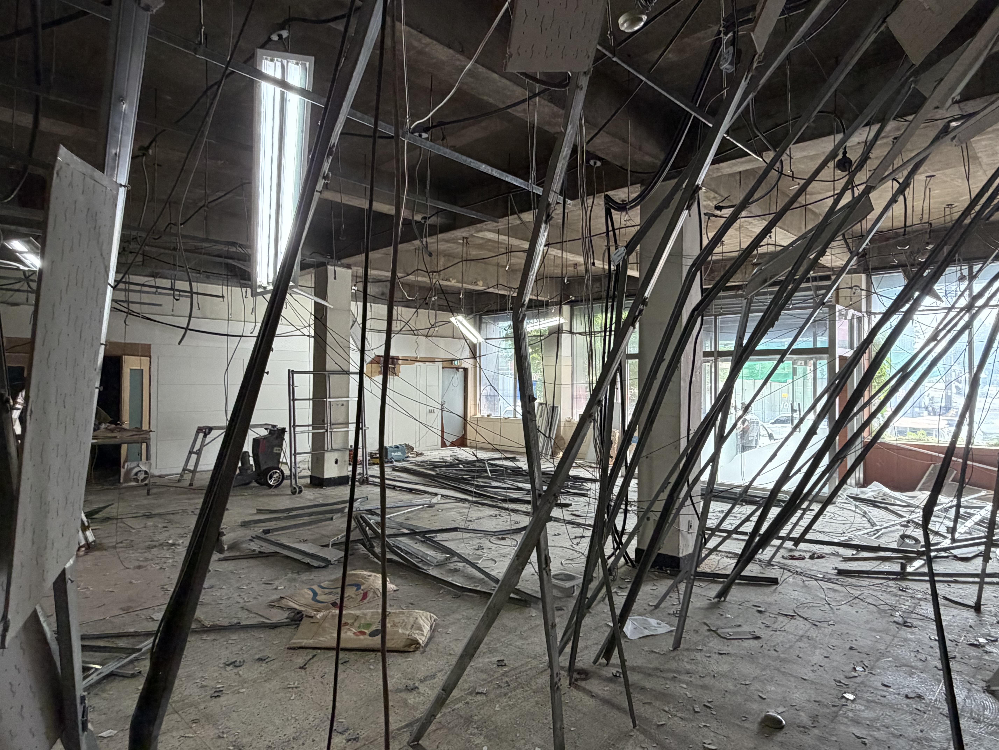
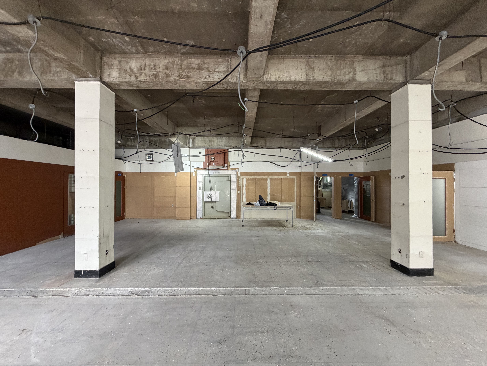
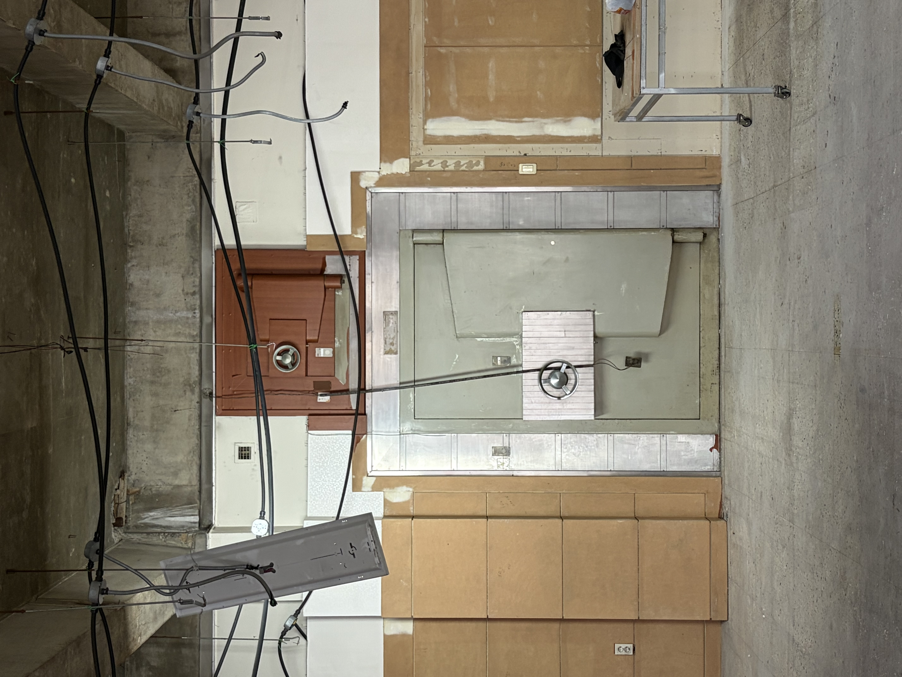
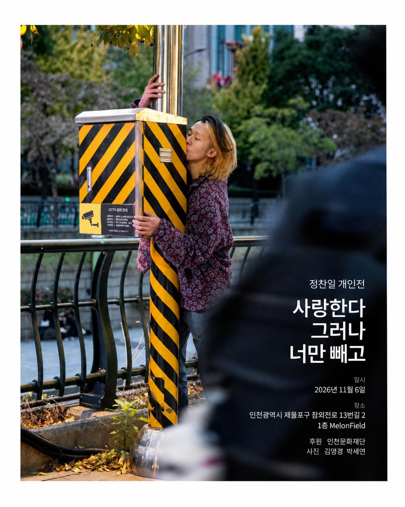

멜론필드(Melon Field)는 참외의 영어명인 '코리안 멜론(Korean Melon)'의 멜론과 대지, 땅을 뜻하는 '필드(Field)'가 합쳐진 이름이다. 예전 이곳 인근은 참외밭과 참외 시장이 오가던 지역으로, 경기도 방언으로는 '채미전'이라 불렸다고 한다.
멜론필드는 완성된 전시장이라기보다 수많은 가능성이 요동칠 수 있는 실험적 그라운드라는 거대한 목적을 안고 있다. 그러나 전시장을 찾는 누구나 눈치채셨듯이, 원래 이곳은 수협(수산물협동조합)이 1979년부터 2023년까지 있었던 자리다.
그리고 재개발을 앞두고 있는 시한부와 같은 장소이다. 나는 은행이라는 장소적 특징이 계속 신경 쓰여서일까? 전시 공간으로 쓰기 위해 계획한 시간이 꽤 길었지만 쉽사리 진행을 할 수 없었다. 개발이 언제 될지 몰랐던 것도 있었고, 더 중요한 것은 은행이었던 역사성이 꽤나 거대하게 다가왔다.
그래서 그 장소의 이름값이 가진 고정관념이 전시장 이름부터 시작해서 내부 인테리어까지 모든 것을 은행과 관련된 문법들로 맞추게 만들었다. 또 40년 이상을 지역 주민들의 공동 기억으로 공유된 장소라 그런지, 여전히 종종 은행 업무를 보러 오시는 어르신들이 있다.
더 이상 은행이 아니라고 말씀드리며 그들을 돌려보내면서도 오랜 시간 향유했던 시간을 마지막까지 지켜야겠다는 생각이 들었다.
그래서 전시장의 이름과 내부의 인테리어는 은행의 때를 거의 벗겼으나 간판과 내부의 금고는 그대로 두는 것으로써 이곳의 역사를 보존하였고 앞으로 이 필드의 유한한 시간을 의미 있게 쓰고자 한다.









정찬일 개인전 《사랑한다 그러나 너만 빼고》
01.'멜론필드(Melon Field)'는 참외의 영어명인 '코리안 멜론(Korean Melon)'의 멜론과 대지, 땅을 뜻하는 '필드(Field)'가 합쳐진 이름이다. 예전 이곳 인근은 참외밭과 참외 시장이 오가던 지역으로, 경기도 방언으로는 '채미전'이라 불렸다고 한다. 우리가 아는 이 노란 참외는 사실 한국에서 거의 유일하게 소비되는 과일이기도 하다. 멜론필드는 완성된 전시장이라기보다 수많은 가능성이 요동칠 수 있는 실험적 그라운드라는 거대한 목적을 안고 2026년 11월 6일 첫 영업을 개시한다.
02. 작년 이맘때쯤, 《아르코 댄스 UP:RISE 2025》를 통해 정찬일이 기획한 공연 《XXX》를 보았다. 노란 비닐포가 깔린 배경 위에서 두 인간이 살기 위해, 어쩌면 사랑하기 위해 처절하게 몸부림치던 장면이 잔상처럼 남아있다.
03. 어째서일까? 우리는 흔히 상대를 완벽히 이해하는 것이 관계의 완성이라 믿는다. 그러나 타인의 감정과 생각은 결코 직관될 수 없으며 관계를 유지시키는 동력은 역설적으로 그 완벽한 이해가 불가능하다는 지점에서 발생한다. 답장의 늦어짐, 무심한 표정, 미세한 체온의 변화처럼 파편화된 조각들을 마주할 때, 우리는 완벽한 정보 대신 그 조각들 사이에 남겨진 '빈틈'을 통해 대상을 추정하고 자신만의 의미를 직조해낸다. 멜론필드의 개관전 《사랑한다 그러나 너만 빼고》는 바로 이 오해와 사유, 그리고 불확실성의 지대에서 피어나는 관계에 대한 이야기다.
04. 정찬일은 대상을 완벽히 규정하거나 해부하려는 시도를 경계한다. "나는 너밖에 모른다"는 다정한 고백 뒤에는 상대를 내가 규정한 틀 안에 고정시키려는 시각적 폭력성이 내포되어 있을지 모른다. 작가는 이러한 고정된 시선에 균열을 내며 대상이 지닌 무한한 변주의 가능성을 열어두고자 한다. 이 우연하고 불완전한 배치는 관람객으로 하여금 정해진 답을 찾는 대신 이미지와 이미지 사이의 설명되지 않는 빈틈으로 들어가 스스로 관계를 구성하게 만든다. 그가 바라보는 사랑과 예술은 완벽한 응답을 전제로 하지 않는다. 이번 전시는 결론을 강요하지 않는 온전한 유예의 상태를 제안한다. 대상을 아는 것이 아니라 알지 못하는 상태를 온몸으로 견뎌내는 일, 그리고 '너'라는 대상을 고정된 정의에서 해방시키는 일. 이번 전시는 완벽한 소유의 단계를 넘어설 때 비로소 드러나는 참된 관계의 미학적 지형을 나란히 바라보고자 한다.
아니, 그냥 다 모르겠고 러브 앤 피스1)다!
1) 러브 앤 피스 (Love & Peace): 1960~70년대 히피 문화, 베트남 전쟁 반대 운동과 함께 본격적으로 폭발한 문화적 키워드이다. 국가적 폭력과 전쟁, 사회적 통제에 맞서 무조건적인 사랑과 평화를 인류가 지향해야 할 최우선의 가치로 제시했다. 정찬일의 평소 태도를 볼 때 꽤나 히피 느낌이 있으며 더욱이 본인 입으로 자주 얘기한 인생의 슬로건이다.